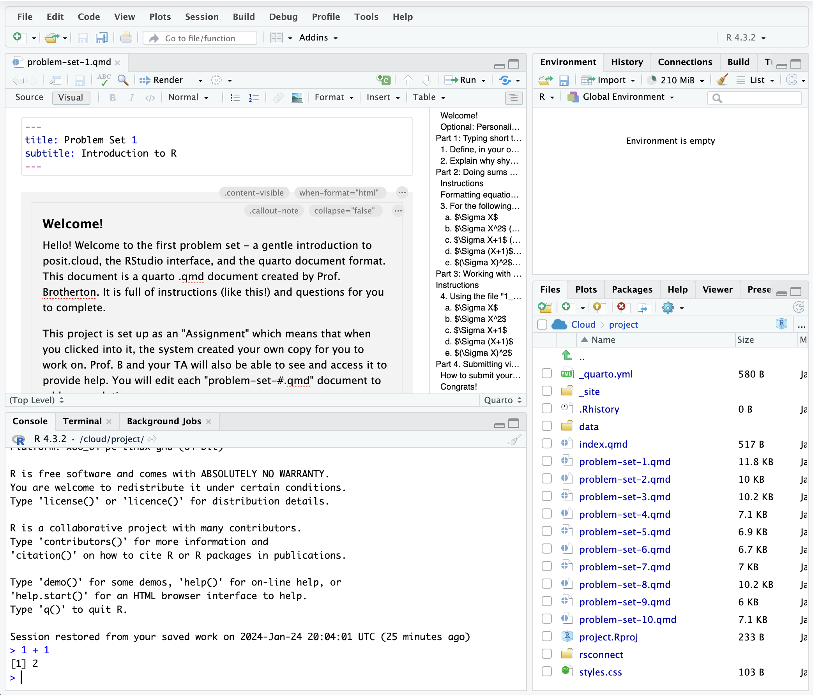
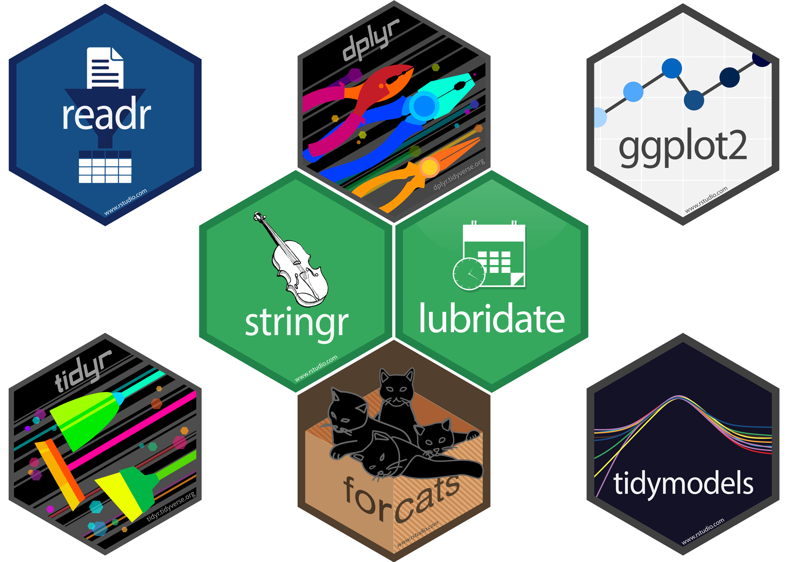

mean(data$A)[1] 3sum(data$A)[1] 15sd(data$A)[1] 1.581139A coding language specialized for statistical computing and data analysis. Free and open-source. (Though there is a cloud-based version which can be paid).
Import data from your computer, websites, databases, via webscraping
Clean and organize data
Analyze and visualize the data
Communicate the results in various formats (pdf research paper, website, presentation slides)
It might seem daunting if you’ve have no experience with coding, but the basic idea is that you have some data, like you are familiar with from a regular Excel or Google Sheets spreadsheet, and you perform operations on your data using functions a lot like you would in Excel/Sheets. For example, you might compute an average in Sheets by typing =AVERAGE(A1:A10). In R you might type mean(my_data$column_a). The specifics of the function names are different, but the basic idea is the same.
A major difference between working with data in Excel vs. R is the separation of data from code. Rather than writing functions to manipulate or analyze data directly in your spreadsheet, code is written in a separate code file, which references but does not modify the source data file (unless you tell it to).

Excel Spreadsheet
| A |
| 1 |
| 2 |
| 3 |
| 4 |
| 5 |
| =AVERAGE(A2:A6) |

R Data
| A |
|---|
| 1 |
| 2 |
| 3 |
| 4 |
| 5 |
R Code
mean(data$A)[1] 3sum(data$A)[1] 15sd(data$A)[1] 1.581139
RStudio is the interface we’ll use to write and run R code and see its output. The basic interface has 4 panels, each with a few tabs:
The R language has many functions built in. Generally speaking, you can find a way to do pretty much anything you would like to do using just ‘base’ R.
However there are many common tasks that are a bit tedious or unintuitive to do using base R. One of R’s strengths is how extensible it is: anyone can write their own functions, turn the code into an R package, and make that package available to other R users.

Actually, the tidyverse package is a container for multiple individual packages. The whole family of tidyverse packages are written with a consistent syntax and logic.
E.g….
Structural equation modeling (lavaan)
Meta-analysis (metafor)
Linear mixed effects models (lme4, simr)
Bootstrapping (boot)
Bayesian analyses (brms, rstanarm)
Network analyses (igraph, ggraph, tidygraph, qgraph, bootnet)
Language analysis (tidytext, quanteda)
Audio analysis (tuneR, seewave)
Machine learning (tidymodels)
E.g. maps (sf, leaflet)
install.packages("tidyverse")
install.packages("lme4")Packages only need to be installed on your system once.
If you are just using one function from a package as a one-off, you can use the double-colon :: operator in the form package::function(), i.e.
# package::function syntax
dplyr::filter(...)
tidyr::pivot_longer(...)
lme4::lmer(...)If you will be using a package’s functions repeatedly, it can be preferable to activate the entire package using the library() function.
# activate installed packages first with library()
library(tidyverse)
library(lme4)
# then use functions
lmer(...)Note that a package only needs to be installed once on your system (or in a new posit.cloud project), but if you are using the library() method to activate the package, it must be done every time you have a new ‘session’ in R.
There is a help documentation page for every function. You can access it by typing a question mark and then the name of the function in the console and hitting Enter/Return:
?mean
?t.testDoing so brings up the function documentation in the Help pane in the bottom-right of the RStudio interface.
Alternatively, you can click into the Help pane directly and type a function or topic into the search bar near the top of the pane.